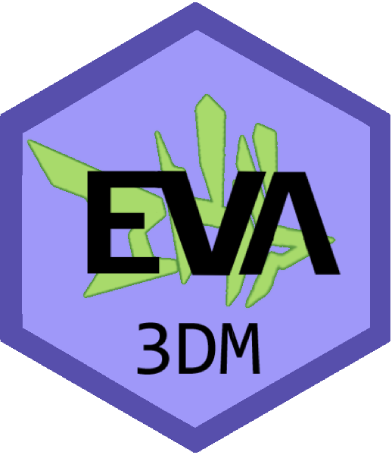

Changelog
Source:NEWS.md
eva3dm 0.7.0
- github actions for installation and check (linux-relese, linux-dev, linux-old1, win-release, win-old1, iso-relese)
- Cod-cov integration
eva3dm 0.5.6 (Release date: 29 April 2024)
- Website and other documentation update
- %IN% syntax implemented
eva3dm 0.5.0
- eval() and sat() are functional with stat() and cate()
- the package covers from pre-processing to the final evaluation